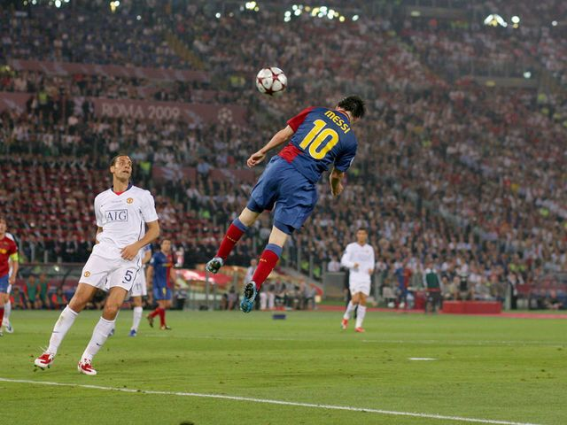
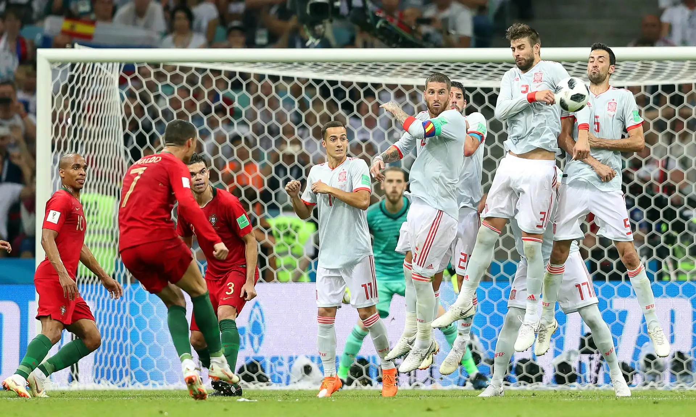
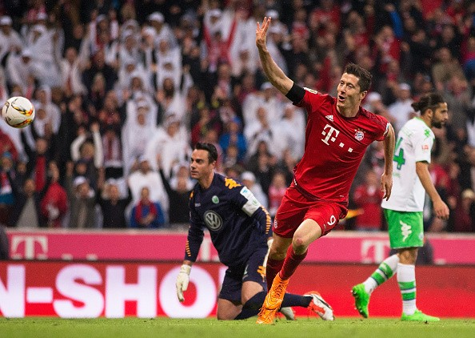
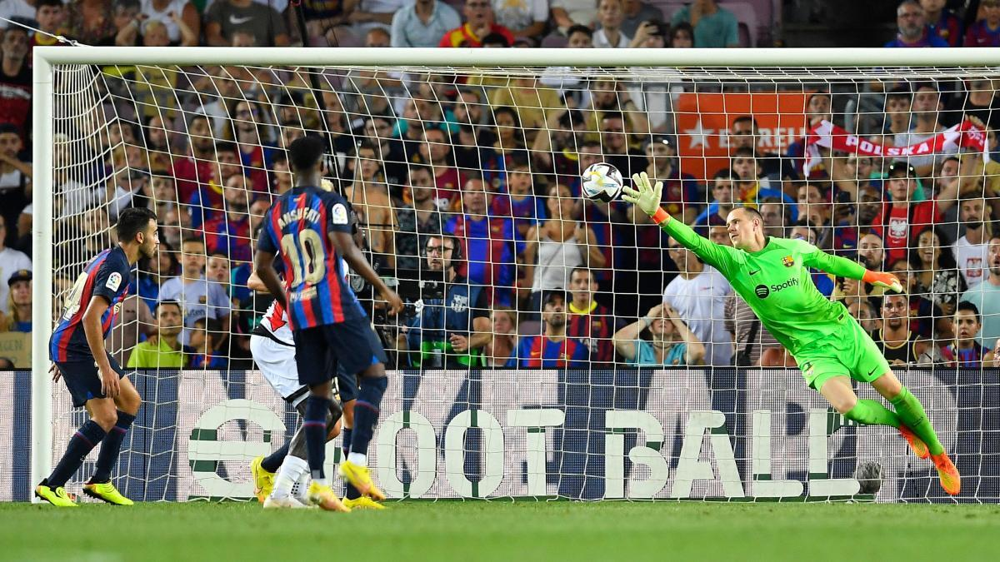

Greatest Moments

Lionel Messi
Scoring the winning goal against Manchester United in the 2009 Champions League final, solidifying his place as a legend.

Cristiano Ronaldo
Delivering a hat-trick against Spain in the 2018 World Cup, showcasing his incredible ability to shine in big moments.

Robert Lewandowski
Scoring 5 goals in 9 minutes for Bayern Munich against Wolfsburg in 2015, a record-breaking performance.
Neymar Jr.
Leading Barcelona to an incredible comeback against PSG in the 2017 Champions League with two goals and an assist.

Marc-André ter Stegen
Making a crucial penalty save for Barcelona in the 2021 Copa del Rey final, helping his team secure the trophy.